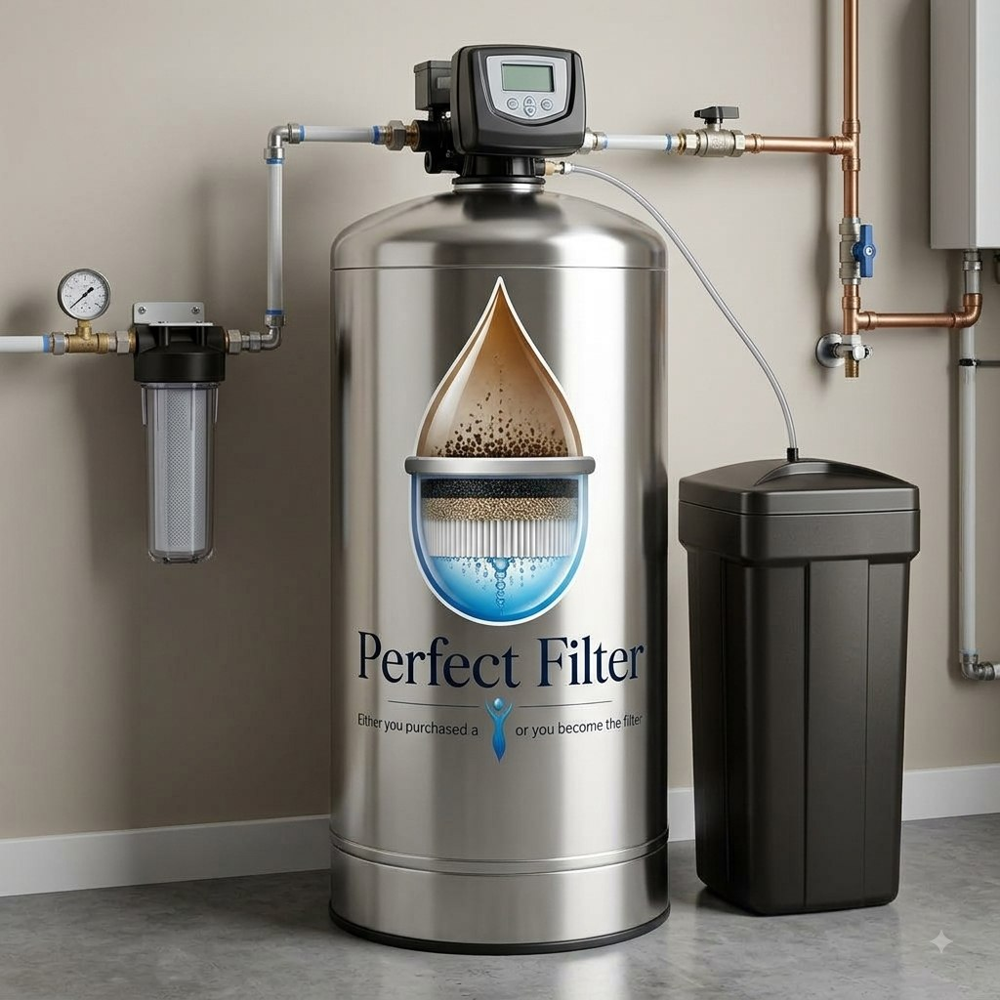

Stage 1 · Macro Filtration
An upper distributor and screen ensure even water distribution, increasing contact time and system efficiency while reducing slippage.

Description
A purification and softening system that reduces chemicals, heavy metals, odor and stale taste, while softening your water by removing calcium and magnesium through our proprietary Cascadion Media blend. A state-of-the-art metering valve measures water volume and knows exactly when to backwash and regenerate — saving you water and salt.
The Process
Stage 1 · Macro Filtration
An upper distributor and screen ensure even water distribution, increasing contact time and system efficiency while reducing slippage.
Stage 2 · Catalytic Carbon
A 1240-mesh catalytic carbon — a highly absorbent, industry-leading media — reduces disinfection byproducts including chlorine, ammonia and chloramines, and aids in breaking down hydrogen sulfide.
Stage 3 · Softening Media
Cation resin reduces and demineralizes hard minerals like calcium, magnesium and manganese, along with dirt, rust and sediment — protecting plumbing, appliances and fixtures from corrosion.
Stage 4 · Clarity & Polish
Premium-grade quartz handles sediment filtration, polishing the water and promoting even distribution through the system.
Final · Regeneration
A high-efficiency sodium ion exchange backwashing process keeps the system performing at its best for the long run.
Benefits
A water softener prolongs the life of your appliances by reducing scale buildup, improves cleaning efficiency by enhancing soap and detergent performance, and prevents soap scum. It's also easier on skin and hair by preventing dryness, reduces plumbing issues by preventing clogs and corrosion, and increases water heater efficiency for lower energy bills — while saving on maintenance and repair costs, improving taste and quality, and preventing staining on sinks, bathtubs and toilets.
Extended Appliance & Pipe Lifespan
Healthier Hair & Skin
Better Tasting Food
Easier Cleaning